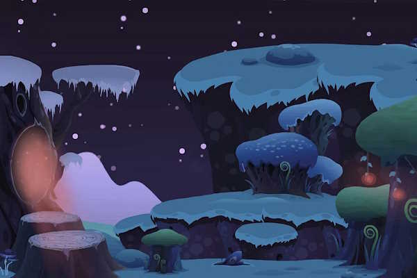
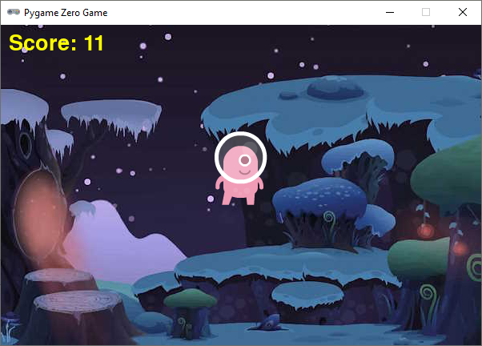

1.5. Winnen en verliezen#
Bij veel games gaat het om winnen of verliezen. Als je wint, heb je een goede score en als je verliest is het ‘game over’. In dit hoofdstuk maken we een spel waarin je aliens zo lang mogelijk in de lucht moet houden. Zodra een alien de grond raakt, is het spel afgelopen.
Het uitgangspunt voor het spel is de onderstaande code.
1# Vensterafmetingen
2WIDTH = 600
3HEIGHT = 400
4
5# Roze alien Actor
6alien = Actor('alien_pink')
7alien.midbottom = (WIDTH / 2, 0)
8alien.speed = 3
9alien.jump_distance = 150
10
11# De draw() functie van de game
12def draw():
13 screen.clear()
14 alien.draw()
15
16# De update() functie van de game
17def update():
18 alien.y += alien.speed
19 if alien.bottom > HEIGHT:
20 alien.bottom = HEIGHT
21
22# Mouse down event handler
23def on_mouse_down(button, pos):
24 if alien.collidepoint(pos):
25 alien.y -= alien.jump_distance
Bij aanvang van de game bevindt de alien zich net boven de bovenrand van het venster. Hij valt met 3 pixels per frame naar beneden en wanneer de gebruiker met de muis op hem klikt, springt hij 150 pixels omhoog.
1.5.1. Game over#
Het spel is afgelopen zodra de alien de onderkant van het venster raakt. Het spel moet stoppen en de boodschap ‘game over’ verschijnt. Voor deze boodschap gebruiken we een sprite. Download de game_over sprite naar je alien/images map.
{kind=link}

Voeg voor de ‘game over’ boodschap een nieuwe Actor game_over_message toe, onder de alien Actor:
Om de boodschap te tonen moeten we in de draw() functie game_over_message.draw() aanroepen. Wat gaat er mis als we dat doen op de onderstaande manier? Probeer het uit.
Nu wordt ‘game over’ al vanaf het begin op het scherm getoond! Om ervoor te zorgen dat de sprite alleen zichtbaar is als het spel daadwerkelijk voorbij is, hebben we een variabele nodig:
Je kunt in variabelen getallen opslaan maar ook de waarden True en False om aan te geven dat iets waar of niet waar is. De variabele game_over stelt ons in staat om in de draw() functie een if statement te maken:
Het probleem is opgelost. De game_over_message sprite is niet meer zichtbaar vanaf het begin. Echter, hij moet wél zichtbaar worden wanneer de alien de grond raakt. In welke functie detecteren we die gebeurtenis? Juist, in de update() functie. In het if statement dat het raken van de grond afhandelt, zetten we game_over op True:
Nu zou het moeten werken, toch? Probeer maar eens.
De ‘game over’ boodschap verschijnt niet. Er gebeurt helemaal niets. De oorzaak hiervan is een beetje ingewikkeld. Hou je wel van ingewikkelde dingen, klap dan de onderstaande uitleg over globale variabelen open.
Meer weten over globale variabelen?
In Python creëer je een variabele met een assignment statement:
<variabelenaam> = <waarde>
Het maakt echter uit op welke plek dat assignment statement staat. Bekijk de volgende code. Als je het zelf wilt testen, maak dan een nieuw bestand in Mu editor en stel de mode van Mu editor in op Python 3.
1g = 1 # Globale variabele
2
3# Functie spam()
4def spam():
5 l = 2 # Lokale variabele
6 print(l)
7
8# Hoofdprogramma
9print(g)
10spam()
g gemaakt. Dit is een globale variabele, want deze regel bevindt zich niet in een functie.l gemaakt. Dit is een lokale variabele, want deze regel bevindt zich wél in een functie.Globale variabelen zijn in je hele programma bekend, ook in de functies. Lokale variabelen echter zijn enkel bekend binnen de functie waarin ze zijn gemaakt. Buiten die functie bestaan ze niet.
Het volgende kan dus:
1g = 1 # Globale variabele
2
3# Functie spam()
4def spam():
5 l = 2 # Lokale variabele
6 print(l)
7 print(g) # Globale variabele g is hier bekend
8
9# Hoofdprogramma
10print(g)
11spam()
Maar het volgende levert een foutmelding op:
1g = 1 # Globale variabele
2
3# Functie spam()
4def spam():
5 l = 2 # Lokale variabele
6 print(l)
7
8# Hoofdprogramma
9print(g)
10spam()
11print(l) # Lokale variabele l is hier niet bekend
De oplettende lezer zal nu zeggen: ‘Dan is er toch geen probleem? Onze game_over variabele in alien.py is globaal, dus bekend in de update() functie.’ Dat is waar, maar er zit nog een addertje (een Python?) onder het gras: van globale variabelen kun je binnen een functie wel de waarde opvragen, maar je kunt er niet een nieuwe waarde in opslaan. Ons assignment statement in regel 31 wordt door Python geïnterpreteerd als het aanmaken van een nieuwe variabele game_over. We hebben dan dus twee variabelen met dezelfde naam, een globale en een lokale.
# Variables
game_over = False # Globale variabele game_over
...
# De update() functie van de game
def update():
...
game_over = True # Lokale variabele game_over
Om een globale variabele binnen een functie te kunnen wijzigen, moet je bovenaan die functie het keyword global gebruiken, gevolgd door de naam van de variabele. Dus:
# Variables
game_over = False # Globale variabele game_over
...
# De update() functie van de game
def update():
global game_over
...
game_over = True # Globale variabele game_over
Waarschuwing
Het gebruik van globale variabelen is eigenlijk ‘bad practice’; je kunt ze beter zo min mogelijk gebruiken, zeker wanneer je grotere programmeerprojecten gaat doen. Voor ons kleine alien spelletje is het echter geen probleem.
Als je even geen trek hebt in ingewikkelde dingen, maar wel graag je game werkend wil maken, voeg dan bovenaan de update() functie de volgende regel toe:
Misschien heb je het al gemerkt: na het verschijnen van de ‘game over’ boodschap kun je nog steeds op de alien klikken om hem te laten springen. Om dat op te lossen, voegen we een extra if-statement toe aan de on_mouse_down() event handler:
Het keyword return zorgt ervoor dat Python direct terugkeert uit de functie, zonder de rest van de code uit te voeren.
1.5.2. Score#
In ons alien spel is je score eigenlijk de tijd; hoe langer je de alien in de lucht houdt, hoe hoger je score. Daarvoor hebben we de Pygame Zero clock nodig. Maar laten we beginnen met het maken van een score variabele:
Om de score elke seconde met een punt te verhogen, moeten we een nieuwe functie maken. Definieer de functie increment_score() als volgt:
Ook hier moet je weer het keyword global gebruiken om de waarde van de globale variabele score te kunnen wijzigen binnen de functie.
Het tonen van de score gebeurt in de draw() functie:
We zijn er bijna. We moeten er alleen nog voor zorgen dat de functie increment_score elke seconde wordt aangeroepen. Daarvoor gebruiken we de functie clock.schedule_interval(). Deze hoeft slechts één keer te worden aangeroepen, helemaal aan het begin van de game. Daarom plaatsen we de aanroep helemaal onderaan in het ‘hoofdprogramma’:
Tussen de haakjes van clock.schedule_interval() staat eerst de naam van de functie die we telkens willen aanroepen gevolgd door het tijdsinterval in seconden. Regel 48 zorgt er dus voor dat increment_score elke 1 seconde wordt aangeroepen.
Onze game is nu al redelijk speelbaar, maar er gaat nog iets niet helemaal goed. Kun je ontdekken wat dat is?
Je kunt het probleem op de volgende manier oplossen:
Na het verschijnen van ‘game over’, werd de score nog steeds elke seconde opgehoogd. Door het aanroepen van clock.unschedule(increment_score) is dat gestopt.
1.5.3. Achtergrond(muziek)#
Ons spel kan nog wel wat verfraaiing gebruiken. We gaan een achtergrondafbeelding toevoegen en ook een achtergrondmuziekje. Download de achtergrondafbeelding naar je alien/images map.
{kind=link}

Om de achtergrondafbeelding zichtbaar te maken, vervang je de aanroep screen.clear() in regel 26 door screen.blit('background', (0, 0)).
Bekijk het resultaat. Dat ziet er meteen een stuk beter uit toch? Omdat een achtergrond statisch is (niet hoeft te bewegen), hebben we er geen Actor voor aangemaakt, zoals we dat met de alien en de ‘game over’ boodschap deden. De aanroep screen.clear() is overbodig geworden omdat de achtergrond telkens opnieuw wordt getekend wanneer de alien zich verplaatst.
Klik in Mu editor op de Music knop om de map alien/music aan te maken en te openen. Download vervolgens de achtergrondmuziek naar die map. Overigens is deze muziek afkomstig van Zapsplat, een website waar je muziek zonder copyrights kunt downloaden. Ook vind je hier een grote verzameling geluidseffecten voor je games.
Om de muziek te laten afspelen hoef je slechts één regel aan het hoofdprogramma toe te voegen:
De basis van het spel is nu klaar. Ben je ergens halverwege de draad kwijtgeraakt, dan kun je hieronder de volledige code bekijken. Natuurlijk zijn nog allerhande verbeteringen mogelijk. In het volgende hoofdstuk bekijken we enkele van die verbetermogelijkheden.

Volledige code van het spel
1# Vensterafmetingen
2WIDTH = 600
3HEIGHT = 400
4
5# Roze alien Actor
6alien = Actor('alien_pink')
7alien.midbottom = (WIDTH / 2, 0)
8alien.speed = 3
9alien.jump_distance = 150
10
11# Game over message
12game_over_message = Actor('game_over')
13game_over_message.center = (WIDTH / 2, HEIGHT / 2)
14
15# Variables
16game_over = False
17score = 0
18
19# Functie increment_score() verhoogt de score
20def increment_score():
21 global score
22 score += 1
23
24# De draw() functie van de game
25def draw():
26 screen.blit('background', (0, 0))
27 alien.draw()
28 screen.draw.text(f"Score: {score}", (10, 10), color = "yellow", fontsize = 40)
29 if game_over:
30 game_over_message.draw()
31
32# De update() functie van de game
33def update():
34 global game_over
35 alien.y += alien.speed
36 if alien.bottom > HEIGHT:
37 alien.bottom = HEIGHT
38 game_over = True
39 clock.unschedule(increment_score)
40
41# Mouse down event handler
42def on_mouse_down(button, pos):
43 if game_over:
44 return
45 if alien.collidepoint(pos):
46 alien.y -= alien.jump_distance
47
48# Hoofdprogramma
49clock.schedule_interval(increment_score, 1)
50music.play('astro_race')